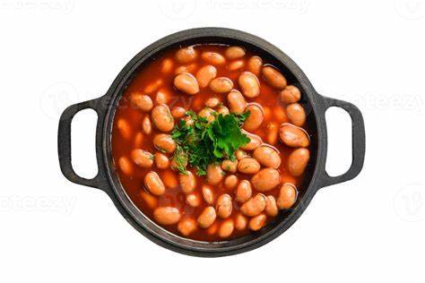

Bourbon Baked Beans

Description
These bourbon baked beans with brown sugar, bacon, and Dr Pepper are baked for 3 hours for the perfect blend of flavors. They're always popular at parties!
Ingredients
- 1/2 cup brown sugar
- 1 tablespoon ground cuman
- 1 teaspoon dry mustard
- 1/4 teaspoon cayenne pepper
- 1 can caffeinated soda drink
- 3/4 cup ketchup
- 1/4 cup Worcestershire sauce
- 8 slices bacon
- 1 large onion
- 1 clove garlic, minced
- 1/4 cup bourbon
- 2 cans baked beans
Directions
- Preheat the oven to 350 degrees F (175 degrees C).
- Mix brown sugar, paprika, mustard, and cayenne pepper together in a bowl. Whisk in pepper soda, ketchup, and Worcestershire sauce until brown sugar is dissolved.
- Cut 4 slices of bacon into small strips. Cook and stir in a large Dutch oven over medium heat until almost crispy, 3 to 5 minutes. Transfer to a bowl, reserving bacon grease.
- Stir onion into the bacon grease in the Dutch oven; cook and stir until soft, 3 to 5 minutes. Add garlic; cook and stir for 1 minute. Pour in bourbon, stirring to scrape up browned bits off the bottom with a wooden spoon. Stir bacon strips back in.
- Pour brown sugar mixture and baked beans into the Dutch oven. Simmer until beans are heated through, about 15 minutes. Arrange remaining 4 slices of bacon on top of the beans.
- Bake in the preheated oven, covered, until beans are bubbly and sauce is syrupy, about 2½ to 3 hours.